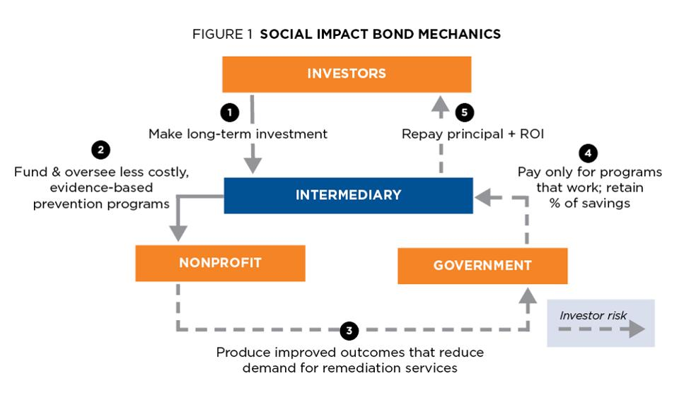

A Social impact bond, also known as Pay for Success Financing, a Pay for Success Bond or a Social Benefit Bond or simply a Social Bond, is a contract with the public sector in which a commitment is made to pay for improved social outcomes that result in public sector savings. The term was originally coined by Geoff Mulgan, Chief Executive of the Young Foundation. The first Social Impact Bond was launched by UK-based Social Finance Ltd. in September 2010.

Social Impact Bonds are a type of bond, but not the most common type. While they operate over a fixed period of time, they do not offer a fixed rate of return. Repayment to investors is contingent upon specified social outcomes being achieved. Therefore, in terms of investment risk, Social impact bonds are more similar to that of a structured product or an equity investment.